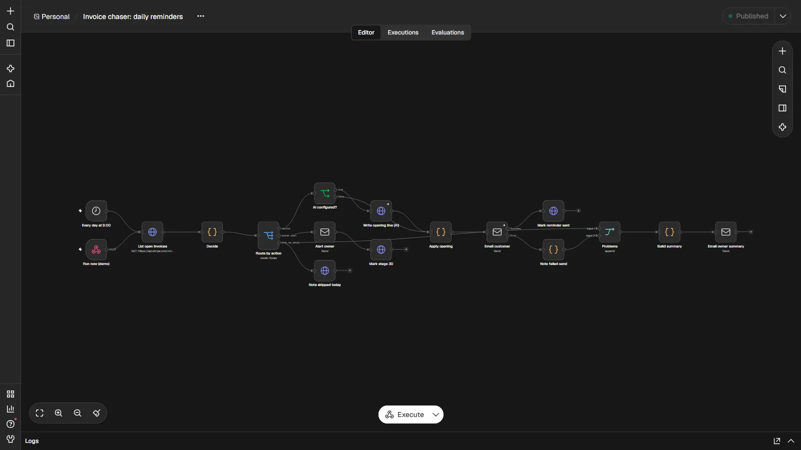

Each one is a personal project. The businesses in them are made up, the test runs and counts are real. Every card answers the same questions: what I built, which tools it connects, and what happens when it fails.
Personal project
Unpaid invoice chaser in n8n
Reminders go out at 3, 7, 14, and 30 days overdue, stop the moment the customer pays, and the owner gets a cash report every Monday. Shown for a made-up plumber, Northside Plumbing & Heating.
A daily chaser at 9:00 that reads every open invoice and sends only the highest stage reached. At 30 days the owner gets a "call this customer" alert instead of another email.
A write-back that saves the stage on the invoice, so the history lives in Stripe.
A paid listener: the customer gets a thank-you, the owner gets a "Paid" note, and the reminders stop.
A Monday 8:00 report: total owed, overdue by age, and what came in after a reminder.
Tools and APIs
n8n (self-hosted in Docker), Stripe invoices API and webhooks in test mode, Stripe CLI, Mailpit as the demo inbox, JavaScript modules with Node tests. An optional AI step writes the first line of each reminder.
Errors and retries
If any workflow fails, the owner gets an email with the error and a link to the failed run.
One email per invoice per day at most, so a rerun never sends twice.
The payment webhook is signature-checked. A forged call gets a 400 and sends nothing.
If the AI line fails its checks, the fixed opening is used. The AI never touches amounts, dates, or the pay link.

The daily chaser workflow in n8n.
What the customer and the owner get, word for word
Real emails from the end-to-end test run. Customers and amounts are made up.
Day 3
To Marcus Lee, $420.00
Invoice GMYSCEPE-0001 from Northside Plumbing & Heating
Hi Marcus, a quick note in case invoice GMYSCEPE-0001 slipped through. The balance of $420.00 was due on Dec 18, 2026. You can pay online in about a minute.
Pay invoice
If you have already sent payment, thank you, and please ignore this email.
Day 7
To Priya Shah, $1,260.00
Reminder: invoice I6UKY8M3-0001 is past due
Hi Priya, invoice I6UKY8M3-0001 for $1,260.00 was due on Dec 13, 2026 and is still open.
Pay invoice
If anything on the invoice looks wrong, reply to this email and we will sort it out.
Day 14
To Rosa Delgado, $640.00
Invoice EHTLJOIZ-0001 is two weeks past due
Hi Rosa, invoice EHTLJOIZ-0001 for $640.00 is now more than two weeks past its due date of Dec 6, 2026. We would like to settle it before it reaches 30 days overdue on Jan 5, 2027.
Pay invoice
If you need to split the payment or have a question about the work, reply and we will work it out with you.
Day 30
To the owner, not the customer
Call Glen Carter: invoice AOIDRWWG-0001 is 31 days overdue
Glen Carter still owes $2,300.00 on invoice AOIDRWWG-0001, due Nov 20, 2026. It is now 31 days overdue.
Automatic reminders have stopped for this invoice. A phone call works best from here.
Priya Shah paid invoice I6UKY8M3-0001 for $1,260.00, 8 days late.
Reminders for this invoice have stopped.
Personal project
AI lead triage in Make
Every website inquiry is read by AI, sorted as hot, warm, or spam, logged to a sheet, and answered with a Gmail draft. Hot leads also get a follow-up on the calendar.
4 of 4test leads sorted right
About 6 sform to sheet, draft, and calendar
2faults found and fixed in the first test
CatchA webhook gets the form: name, email, company, message.
ReadMake AI pulls out need, budget, and timeline, and sorts the lead with one line on why.
RouteA router splits real leads from spam.
ReplyA short reply goes into Gmail as a draft.
LogEvery lead gets a sheet row, spam included.
Follow upHot leads get a 30-minute block two days later.
Try it: the 4 test leads
A replay of the saved test run, not a live call. The leads and businesses are made up; the sorting, reasons, and fields are what the AI returned.
Form message from Dana Reyes, Reyes Dental Studio
"Hi, we run two dental offices and lose new-patient inquiries because nobody answers the web form for a day or two. We want inquiries sorted and a reply drafted the same hour. Budget is around $1,500 and we want it live before December 10."
Hot
This is a real business request with a stated budget and a deadline.
Need
Sort new-patient inquiries from two dental offices and draft replies within the same hour.
Budget
$1,500
Timeline
Before December 10
Result
Draft ready in Gmail, follow-up on the calendar
Form message from Tom Becker, Becker Home Inspections
"Hello, we are a small home inspection company. Our booking requests come in by email, phone and our website and things fall through the cracks. Could you set up something that puts them all in one place? Not sure yet what it would cost."
Warm
This is a real business request, but no budget or timing is stated.
Need
Set up a system to centralize booking requests from email, phone, and the website.
Budget
Not stated
Timeline
Not stated
Result
Draft ready in Gmail
Form message from Ryan SEO Pro, RankBoost Agency
"Dear website owner, I noticed your site is not on page 1 of Google. We offer guaranteed top 3 rankings and 10,000 backlinks for only $99. Reply YES to start today!"
Spam
This is an unsolicited SEO and backlink sales pitch.
Result
Logged with its reason, skipped, no reply
Form message from Priya Shah, Shah Bookkeeping
"We get about 40 client questions a week by email and want them logged and answered faster. We can spend $800 and need it working by the end of the month."
Hot
This is a real business request with a stated budget and a deadline within 30 days.
Need
Log and answer client questions received by email faster.
Budget
$800
Timeline
By the end of the month
Result
Draft ready in Gmail, follow-up on the calendar
What I built
The full Make scenario, the AI prompts, and the sorting rules: hot means a budget or a deadline within 30 days.
The reply prompt restates the need, asks for anything missing, and asks for two call times.
The first test found two faults, fixed the same hour: the follow-up landed at 1 AM, and the AI made up meeting times.
Tools and APIs
Make (webhook, built-in AI, router, filters), Google Sheets, Gmail, Google Calendar.
Errors and retries
Replies stay as drafts. Nothing reaches a lead until the owner clicks Send.
Spam is logged with its reason, never answered, so a wrong call can be caught.
The AI is told never to name meeting times, so it cannot promise a slot.
If the AI, Gmail, or Calendar step fails, the lead is logged to the sheet with the step that broke, and Make retries the run 3 times, 15 minutes apart.
Tested live: 3 of 3 forced faults caught (2 bad emails at the Gmail step, 1 wrong calendar), logged, and saved for retry.
Personal project
An AI agent that runs a content pipeline
One command starts an agent that finds paid video campaigns, checks their rules, builds and checks each clip, schedules the posts, and logs the results. It stops only for the steps a person must do.
64posts scheduled and logged
31campaign research files
14clip batches checked
About 10 ha week saved (estimate)
Find and vetScores campaigns by pay and fit; drops any without written permission.
MakePicks moments, writes the hook and caption, builds the edit.
CheckEach clip passes an audit table or goes back for a fix.
ScheduleBooks slots and puts a reminder on the calendar for each step the owner must do.
TrackLogs every post with views and payouts.
What I built
The staged checklists, audit tables, and hand-off rules the agent works from, running since 2026-10-15.
Calendar follow-ups: each post gets one event at go-live with the links on top, the deadline, and the tap steps, plus alerts 10 minutes before and at go-live.
The agent checks a busy calendar as free/busy only, so it never sees meeting names, and moves any slot that clashes.
Tools and APIs
Claude as the agent, Markdown checklists and audit tables, Google Calendar (free/busy lookup and event creation), a browser automation extension, YouTube Studio.
Errors and retries
It stops for sign-ins, sending any message, payout settings, and the final export, and leaves one task with the exact clicks.
The next run picks up where the last one stopped, from saved files.
Every choice is written to a log the owner can read.
One reminder alert was missed twice in a day, so a second alert was added.
Time saved is an estimate from the work volume over 4.5 weeks at typical by-hand times.
How I build: the same four steps every time.
Map the process
We go through how the work runs today and where it breaks. You get a written plan and a fixed price.
Build on test data
I build with sample records and test keys, so nothing touches your customers while it is being made.
Check every failure
I try the bad cases on purpose: missing fields, repeats, wrong inputs, a step that times out.
Hand it over
You get the build, a short written guide, and a walk-through of how to change it.
In every build: drafts before sends, test keys only until you approve, and a log of every failed run so no lead or invoice is lost.
Rates and hours, set before we start.
$30an hour
$150
One fix
Fixed price
One automation between two tools, such as a form to a sheet with an email alert.
$350
A full flow
Fixed price
A few steps with logic, such as lead sorting with AI, a sheet log, and draft replies.
$650
A system
Fixed price
Several connected workflows with error alerts and reports, like the invoice chaser.
Hours
About 18 a week, async
Based in
Philippines, GMT+8
Live calls
8 to 10 AM US Eastern
What people ask first.
Why no client reviews yet?
I am new on these platforms. Every project on this page is real, and you can open the code and run it yourself.
Which tools do you know best?
Make is the one I know deepest. n8n and Klaviyo are newer to me, and the invoice chaser shows where my n8n work is today.
What happens when an automation fails?
Every build logs the failed run, so you know what broke and where to look. The invoice chaser also emails you a link to the failed run. Lead triage saves the lead and retries it 3 times.
Do you send emails for me?
Builds draft first. Nothing reaches a customer until you say so, unless you choose to let it send on its own.
How do we start?
A 15-minute call. Then I send a written plan and a fixed price.
Tell me what keeps slipping.
Send a line about the task. I reply within one business day with a time for a 15-minute call.